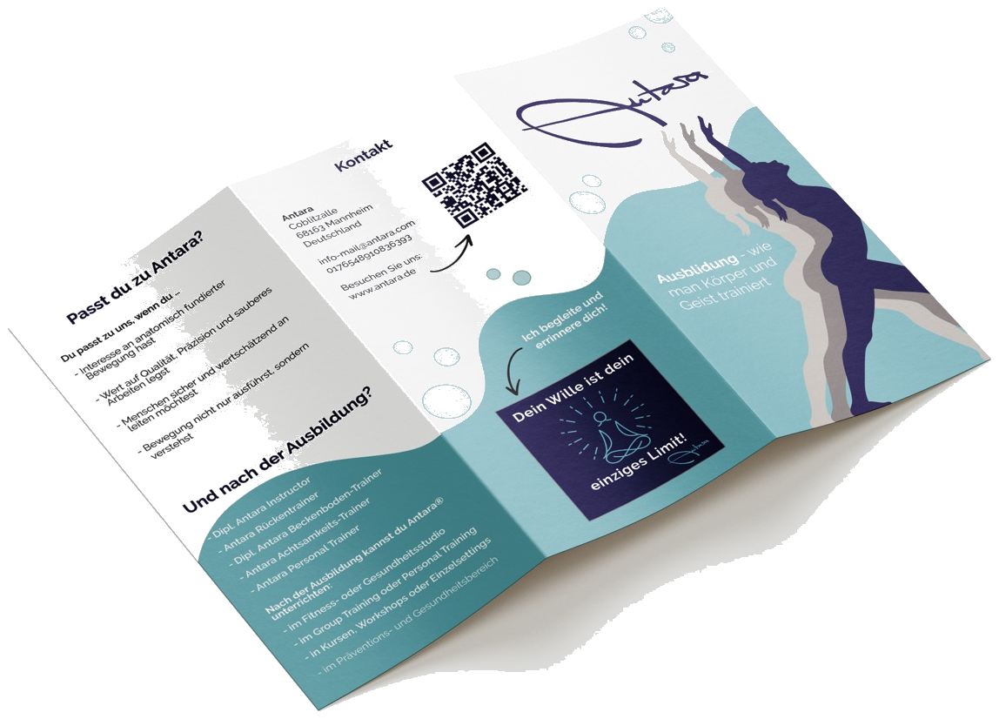
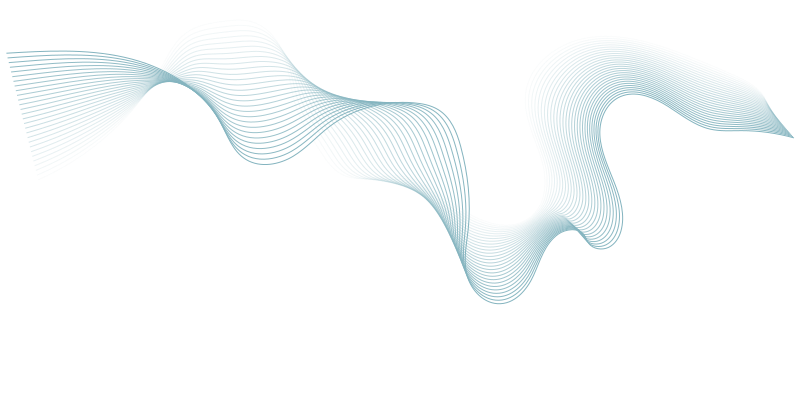
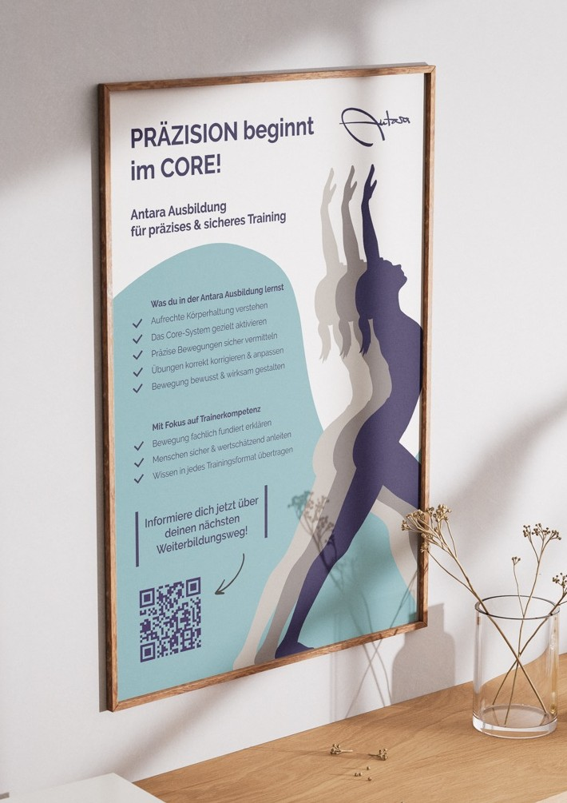
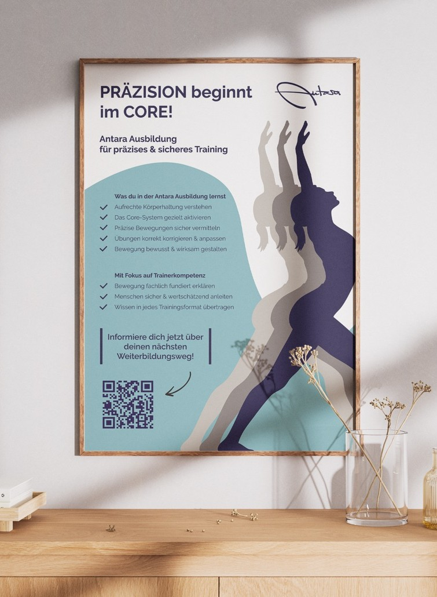

Flyer
Information & Takeaway- Low-barrier first contact
- Ideal for studios, physiotherapy clinics & waiting areas
- Presents the Antara principle as a learnable concept
- With sticker as a reminder → double media effect

A holistic cross-media campaign for Antara, a scientifically grounded movement concept that teaches people to consciously perceive, stabilize, and specifically strengthen their core.
Precision starts in the core. ← Back to Work at DHBWAntara is a scientifically grounded movement concept centered on the core system, posture, and the deep stabilizing muscles. In times of physical inactivity, stress, and sedentary work, Antara conveys a calm, precise, and sustainable understanding of training for body and mind.
In the Cross-Media module, the task was to conceive and design a campaign that is coherent in content and visuals across three communication channels, coordinated between online and offline media, strategically grounded and built around the target audience.
The core idea: „Precision starts in the Core!" — conscious, controlled movement emerges from a precisely trained core system. Quality is not created through intensity, but through accuracy, awareness, and understanding.
Mockups provide a better sense of the campaign vision. They serve as illustrations and for purely visual representation.







The combination of flyer, Instagram & poster enables a holistic approach: from first contact through emotional engagement to lasting brand awareness in physical spaces.
What I take away from this project.
Antara was my first end-to-end campaign — from strategy and copywriting through layout and print-ready artwork to social media. I learned how to maintain a consistent visual and verbal identity across very different media channels, and how to translate a complex, knowledge-driven topic into clear, approachable communication. Working with a real brand sharpened my eye for detail, and the project gave me confidence in managing a campaign from concept to final deliverable.